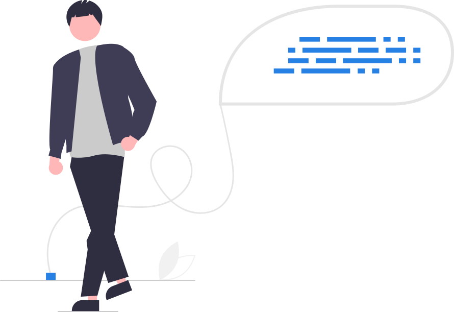

# Without quotes, R looks for an object named red
my_color <- redError:
! object 'red' not foundStatistical Methods with R
Unit A · Chapter 03 · Lecture 03a
Developed by Jeffrey M. Girard

Strings
Factors
Packages
name <- "John Doe"
Quotation marks are what separate a value from a name. Without them R goes looking for an object, which is why the error mentions one you never made.
[1] "red#40"[1] "red#40" "blue#02"Inside quotes the naming rules no longer apply: spaces, #, and anything else are just characters. R only reads what is inside as text.
mean() does not stop with an error; it warns and hands back NA. A result that looks like an answer is easier to miss than a failure.
[1] 2[1] 6 7[1] "RED#40" "BLUE#02"length() counts elements whatever they are; nchar() and toupper() only mean anything for text. What a function accepts follows from its purpose.
[1] 2 2 1 2 1 2 1 1 2 2
Levels: 1 2food2
1 2
4 6 factor() tells R these numbers are labels, not quantities. The Levels: line is how a factor prints, and R found only the values that actually occur.
[1] 2 2 1 2 1 2 1 1 2 2
Levels: 1 2 3food3
1 2 3
4 6 0 State the levels yourself and the count for salad is a meaningful 0 rather than a category that silently does not exist.
[1] pizza pizza nuggets pizza nuggets pizza nuggets nuggets pizza
[10] pizza
Levels: nuggets pizza saladfood4
nuggets pizza salad
4 6 0 levels are the values in your data; labels are what you want printed. Naming them here means never again looking up what 2 meant.
[1] <NA> <NA> <NA> <NA> <NA> <NA> <NA> <NA> <NA> <NA>
Levels: 1 2 3All <NA>: R searched the data for the string "nuggets" and found only the number 2. It does not error; it quietly returns missing values.
[1] pop metal pop rock rap rap pop rock
Levels: metal pop rap rockgenre2
metal pop rap rock
1 3 2 2 With no levels given, R sorts the observed values alphabetically, which is rarely the order you want in a table or a plot.
library("pkg_name")
The stringr package has a function that fixes capitalization, but “could not find function” means R cannot find that name. Check the spelling first, then whether the function’s package is installed and loaded.
Warning
Run this in the Console, never inside a Quarto document, since it would reinstall the package every time you render.
Installing puts the package on your library shelf; it is still not in this session until you take it down with library(). Install once per computer (and again after upgrading R); load once per session.
Many packages ship long-form articles showing how they are meant to be used, usually a better starting point than the help page for any one function. This opens a browser window, so run it in the Console too.